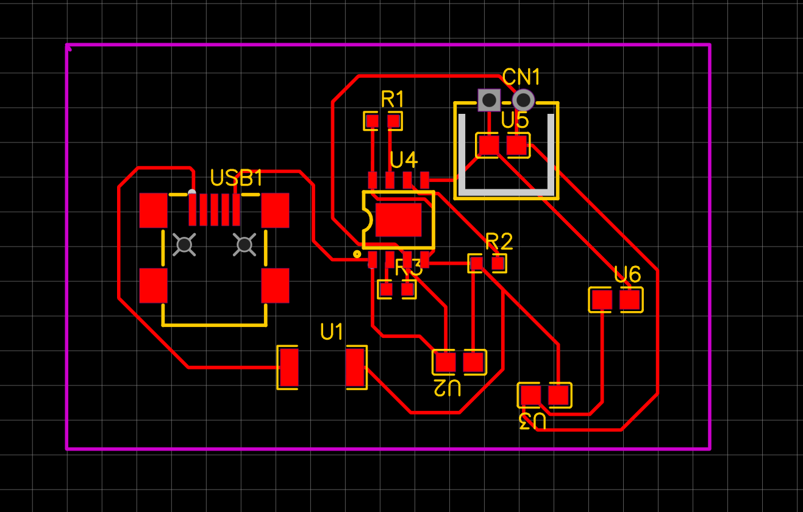
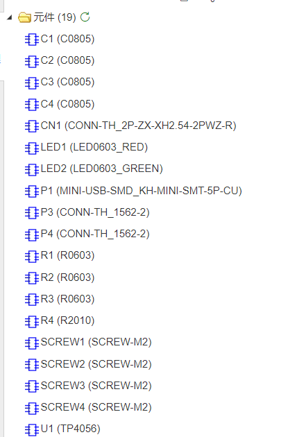

输入部分
电路从 Mini USB 接口引入 5V 输入，VCC 经电阻和去耦电容后送入 TP4056， 为后续恒流恒压充电提供输入电源。
PCB2 / TP4056 Charger
本项目围绕 TP4056 线性锂电池充电芯片展开，任务包括复刻原理图、学习芯片管脚功能、 完成 PCB 布局记录，并整理成一份结构完整的 HTML 设计日志。
当前文件夹中的要求主要包括：复刻 TP4056 充电电路、阅读对应器件资料、整理管脚功能表、 完成原理图和 PCB 布局设计、做网络检查与 DRC 检查，并导出制板文件。
电路从 Mini USB 接口引入 5V 输入，VCC 经电阻和去耦电容后送入 TP4056， 为后续恒流恒压充电提供输入电源。
BAT 引脚连接电池接口，承担对单节锂电池的充电输出；电池侧同样配置了电容， 用于稳定输出并减小电压波动。
CHRG# 和 STDBY# 两个状态输出脚分别配合 LED 指示“正在充电”和“充电完成”， 这是教学电路中很直观的状态显示方式。
PROG 脚外接电阻决定充电电流；输入端和电池端的电容主要起到滤波、去耦和抑制瞬态干扰的作用， 让芯片工作更稳定。
| TEMP | 电池温度检测引脚，可接 NTC 进行过温保护，也可按应用场景做相应处理。 |
|---|---|
| PROG | 充电电流设定引脚，通过外接电阻到 GND 设置充电电流，是参数调节的核心引脚。 |
| GND | 电源与信号公共参考地，也是整板铺铜网络的基础。 |
| VCC | 电源输入引脚，对应 USB 5V 输入，通常需要配合输入侧滤波电容使用。 |
| BAT | 电池连接引脚，接锂电池正极，承担充电输出通路。 |
| STDBY# | 充电完成状态输出，低电平有效，可用于点亮充满指示灯。 |
| CHRG# | 充电状态输出，低电平有效，可用于点亮充电中指示灯。 |
| CE | 芯片使能引脚，用于控制芯片工作状态。 |
现有截图里已经把这部分内容整理成了表格，因此页面中继续沿用“先理解功能，再回看电路连接”的组织方式， 更适合作为学习记录展示。
.jpg)


.jpg)
.png)
布局阶段应先明确 USB 输入、电池输出和指示灯位置，再围绕 TP4056 主芯片展开，保证信号方向清晰。
电源线应尽量短而清晰，GND 推荐整板铺铜；输入输出器件放板边，可以让焊接和使用更方便。
现有材料已经较完整地保留了学习过程，后续如果需要作为最终提交材料，还可以继续补充 Gerber 导出文件和 DRC 结果截图。
{kind=link}
{kind=link}